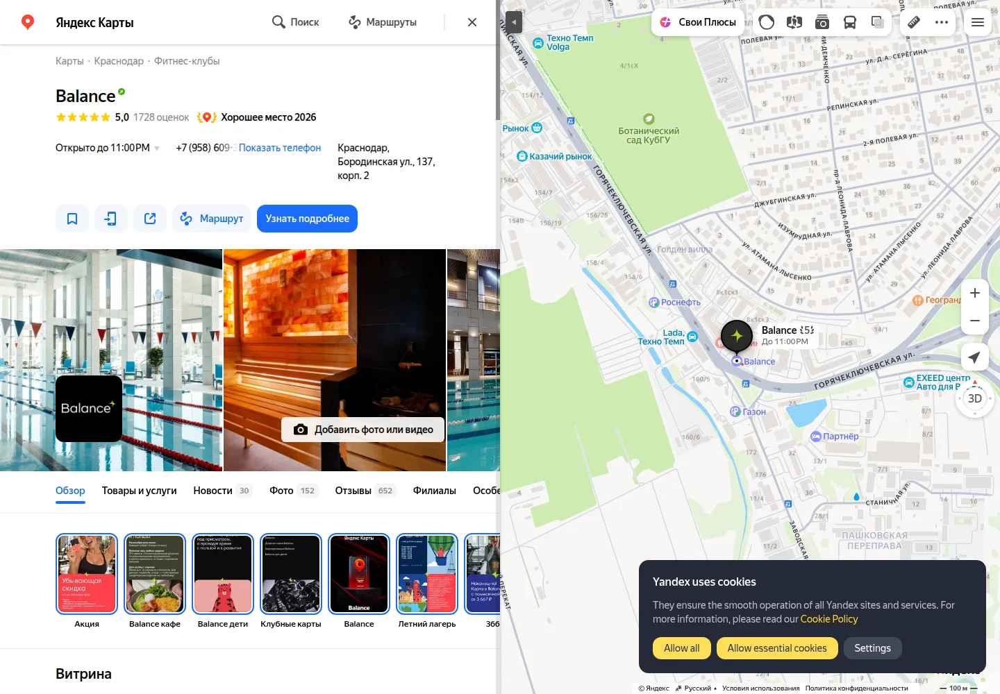
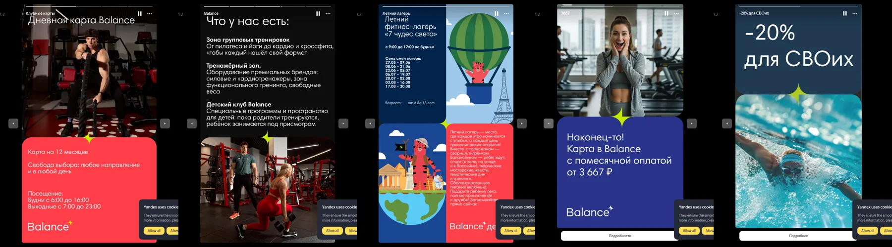
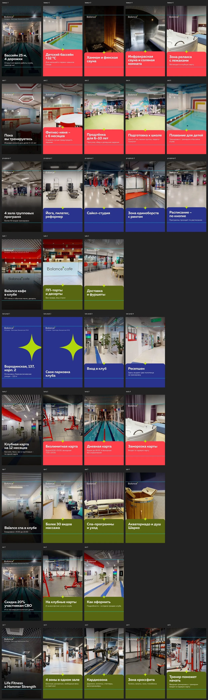
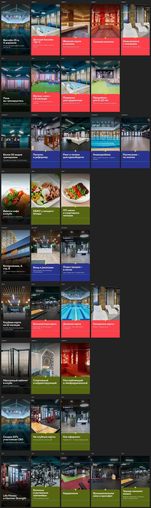
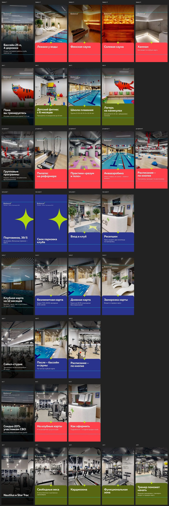
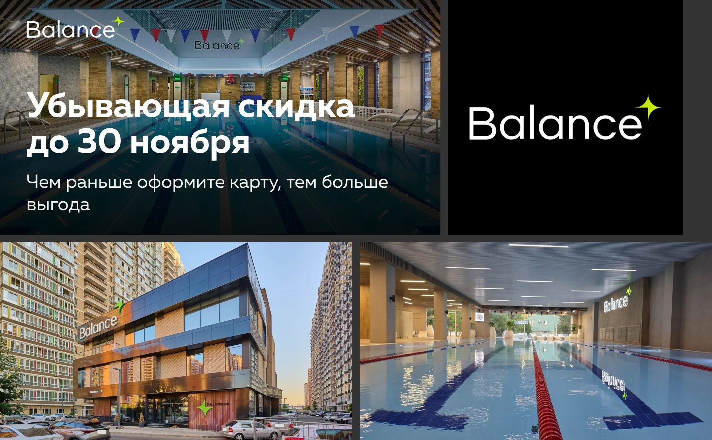

Баланс: Яндекс Карты – ТЗ на три клуба и 106 слайдов сторис готовы
Карточки у клубов сильные: у всех 5,0 и «Хорошее место 2026». Слабые места – старый прайс, устаревшие сторис и нет сторис «Как пройти». ТЗ, все сторис, фото, акция, логотип и обложки готовы. Всё нарисовано бесплатно, из живых фото клуба и кадров 3D-туров. Под это заведены агент и два скилла, они работают на любого клиента.
Что увидел клиент на картах (снято 18.11 без входа в кабинет)
- Империал: 1728 оценок, 652 отзыва, 152 фото. Абрикосово: 962 оценки, 438 отзывов, 193 фото. Адмирал: 203 оценки, 102 отзыва, 100 фото.
- Сторис – 9–10 у каждого клуба, но часть мусорная. «Летний лагерь» висит в ноябре, со сменами мая–августа. Сторис «3667» – цифра вместо названия и стоковое фото. «Balance» и «Что у нас есть» – стена мелкого текста. Сторис «Как пройти» нет ни у одного клуба.
- Прайс у всех трёх помечен Яндексом «Давно не обновлялось». У Абрикосово «Грудничковое плавание – 1 ₽», у Адмирала в прайсе всего 2 позиции.
- Прочее. У Адмирала одна наша новость 16.11 висит дважды – это известный дубль Cycle. В особенностях Адмирала стоит «Доступ по согласованию». В отзывах минусы – парковка и раздевалки.


ТЗ: что поменять, по выгоде
- Обновить прайс всех трёх клубов: убрать «1 ₽», дописать недостающие карты и услуги. Это бесплатно и влияет на позицию.
- Телефоны в карточках (958 …) не совпадают с сайтом – выяснить, подменные ли это номера, и подписать «Ресепшен» и «Отдел продаж».
- Поправить особенности: у Адмирала убрать «Доступ по согласованию» и добавить цену абонемента.
- Сайт в контактах – страница своего клуба, а не главная.
- Подключить «Записаться онлайн» через CRM клуба. Это бесплатно, сейчас запись не стоит ни у одного клуба.
- Акцию сети привязать ко всем трём клубам – сейчас её видно только у Адмирала.
- Удалить дубль новости Адмирала от 16.11.
- Отметить входы и написать комментарий к адресу.
- Поставить первыми 5 фото по ТЗ, а Империалу добавить категорию «Доступность».
- Сторис: снять 5–6 старых у каждого клуба и поставить новые – они ниже.
Полное ТЗ (сеть + каждый клуб, чек-лист 45 пунктов × 3, 2ГИС и Google): TZ-yandex-karty-balance.md
Сторис: 26 историй, 106 слайдов, фирменный стиль
Шрифт Muller, цвета и звезда – как в сторис клуба сейчас, но по одной мысли на слайд и крупным шрифтом. «Как пройти» стоит первой. На каждой истории кнопка со ссылкой на страницу клуба с utm. Код проверил, что текст не заходит под полоски и кнопку Яндекса, а каждый лист я просмотрел глазами.
Империал – 9 историй, 38 слайдов. Своих фото у клуба почти нет, поэтому всё взято из 3D-тура:

Абрикосово – 9 историй, 35 слайдов:

Адмирал – 8 историй, 33 слайда:

Скачать: сторис Империала · Абрикосово · Адмирала. Порядок, названия и ссылки кнопок для кабинета: Империал · Абрикосово · Адмирал.
Остальной визуал

- Акция «Убывающая скидка до 30 ноября» – одна картинка на все три клуба. Проценты на неё не ставил: они падают каждые 5 дней.
- Логотип 720×720 и обложки 1920×1080 – для 2ГИС и Google.
- Фото карточки, первые 5 по каждому клубу. На фасаде Абрикосово 9 номеров машин закрыты строго по рамке.
Скачать: фото карточек · акция, логотип, обложки
Как сделано
- Агент
geo-oformitelи скиллыgeo-karty(аудит и ТЗ) иgeo-vizual(визуал): работают на любого клиента – TEYES, цветы и т. д. - Чем рисовал. Всё рисовал на нашем сервере claude-vps, бесплатно, без ChatGPT. Карточки смотрел нашим браузером, мак не трогал.
- 3D-туры. Это туры подрядчика «Эффект присутствия». Из них снято 128 кадров интерьера, вертикальные – сразу 9:16. Людей в кадрах нет.
Нужно от тебя
- Тариф сети в Яндекс Бизнесе. Сторис по правилам Яндекса есть только в платном «Расширенном». У Баланса они уже стоят – значит, тариф или реклама подключены. Кто ведёт кабинет?
- Ответы клуба:
- актуальные цены карт и цены Адмирала;
- подменные ли номера 958;
- действует ли оплата «от 3 667 ₽» в месяц;
- какая CRM для онлайн-записи;
- есть ли своя парковка у Абрикосово.
- Фото фасада и парковки Империала и Адмирала. Без них два первых слайда «Как пройти» у этих клубов идут без фото, в цвете бренда.
- Выкладка. «Да» на выкладку сторис в кабинет – или отдать файлы администратору клуба.
Что раскрыть
- Почему цены на картинках не ставим, а в прайс карточки ставим.
- Что даёт платный тариф Яндекса и стоит ли он сети.
- 2ГИС и Google: снаружи их пока не смотрели.